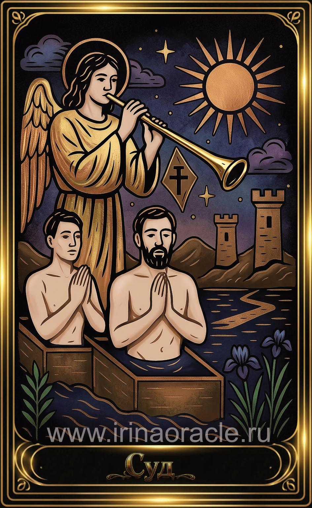

Суд — значение карты Таро
Суд — значение карты Таро

Суд — это карта пробуждения, возрождения и кармического итога. Она символизирует момент истины, когда человек осознаёт свои ошибки, завершает старый цикл и готов вступить в новый этап. Это зов души, который невозможно игнорировать.
Общее значение
Суд указывает на важное осознание, итог, решение или внутренний поворот. Это карта, которая говорит: пришло время подвести черту, простить себя и других, отпустить прошлое и двигаться дальше.
Это энергия обновления, очищения и нового взгляда на жизнь.
Любовь и отношения
В любви Суд указывает на серьёзные разговоры, прояснение, возрождение отношений или окончательное решение. Это момент честности и зрелости.
В тени — повторение старых ошибок, нежелание видеть правду или попытка избежать ответственности.
Работа и финансы
В работе Суд указывает на важные решения, завершение этапа, переход на новый уровень или получение результатов за прошлые усилия. Это карта профессионального роста и осознания своего пути.
В финансах — расчёты, итоги, возвраты, завершение долговых ситуаций.
Здоровье
Суд указывает на восстановление, обновление, выход из сложного периода или осознание причин состояния. Иногда — на необходимость пересмотреть образ жизни.
Это карта пробуждения и перехода к новому уровню здоровья.
Совет карты
Прислушайся к зову. Сделай выбор. Суд советует честно взглянуть на свою жизнь, завершить незавершённое и позволить себе обновиться.
Это время пробуждения и перехода на новый этап.
Теневая сторона
В тени Суд проявляется как страх перемен, избегание ответственности, зацикленность на прошлом или повторение старых сценариев.
Карта напоминает: невозможно двигаться вперёд, если держаться за то, что уже завершилось.